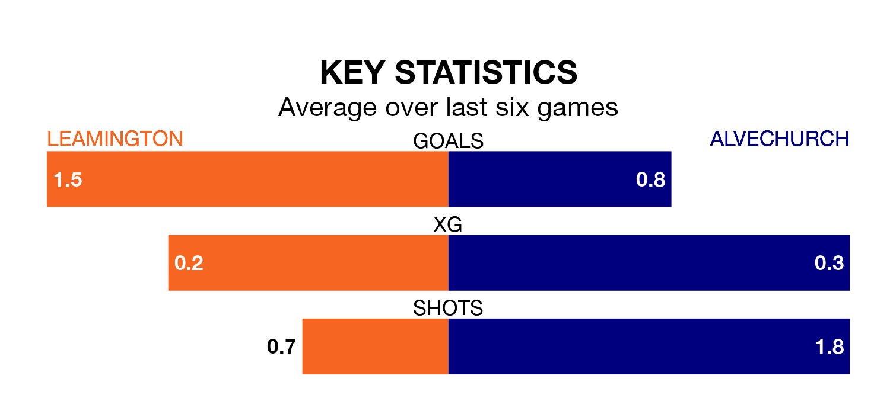

Leamington face Alvechurch on Saturday seeking to protect their long unbeaten run in Southern League Premier Central.
The Brakes are unbeaten in six, with two wins and four draws, ahead of the 3pm kick-off.
They face an Alvechurch team who have won two and drawn one over the same number of games.
Alvechurch are 19th in the table after 25 games, of which they have won seven and drawn six, earning 27 points.
Leamington are 14 places ahead of the away team in fifth, with 12 wins and nine draws putting them on 45 points.
With 31 goals in 25 games so far this season, Alvechurch are scoring at below the league average rate with 1.2 goals per game. And they are conceding more than average, letting in 46 goals at a rate of 1.8 per game.
The Brakes, meanwhile, are average scorers, with 1.5 goals per game. They have conceded 0.9 goals per game.
Leamington's last match was on January 6, a 2-0 win against Berkhamsted.
Alvechurch lost 1-0 against Stourbridge last time out, on Tuesday.
Updated: 09:07 (UTC), 24/01/24